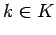

Ein abstraktes Kryptosystem besteht aus den folgenden Mengen: Nachrichtenraum M, Schlüsseltextraum C, Schlüsselräume K und K', Funktionsräume und  .
.
Eine Nachricht wird durch Anwendung einer Abbildung mit einem Schlüssel  zu einem Schlüsseltext verschlüsselt und über einen Kommunikationskanal übermittelt. Der Empfänger kann aus c die ursprüngliche Nachricht m reproduzieren, sofern er über eine geeignete Abbildung und den dazu passenden Schlüssel verfügt.
Es gibt zwei Arten von Kryptosystemen:
Beim Erstellen von klassischen Kryptosystemen kann der Anwender seiner Phantasie freien Lauf lassen. Das Verschlüsseln und Entschlüsseln darf aber nicht zu kompliziert werden. In jedem Fall ist die sichere Übertragung zwischen beiden Kommunikationspartnern unabdingbar.